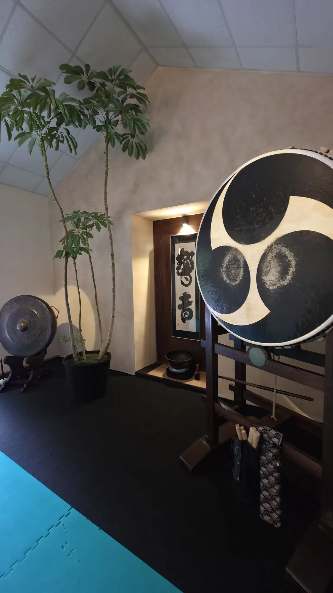
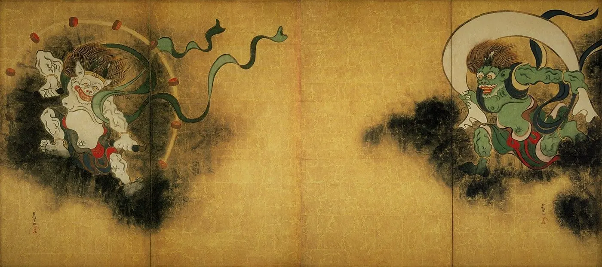
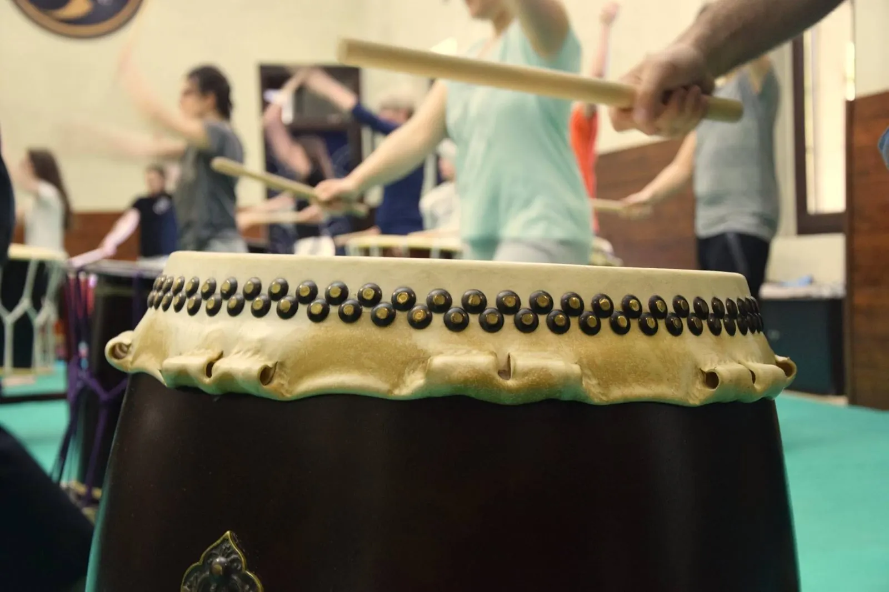
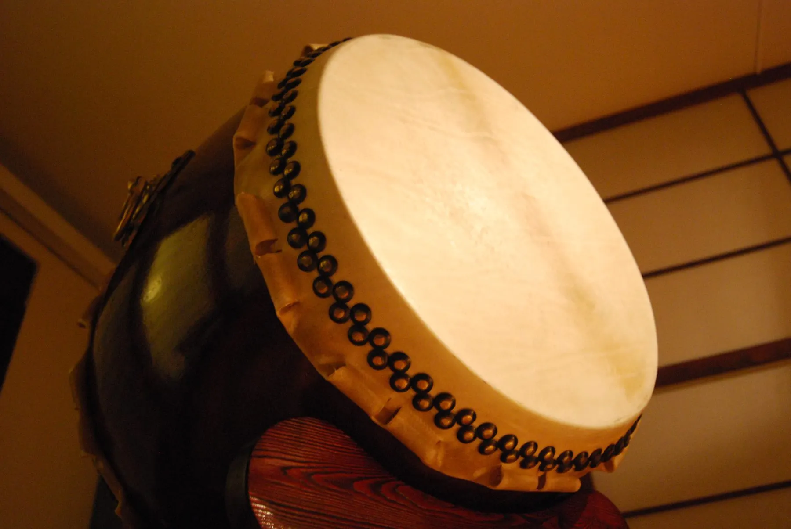
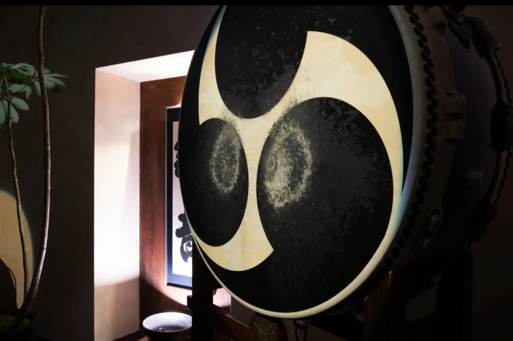
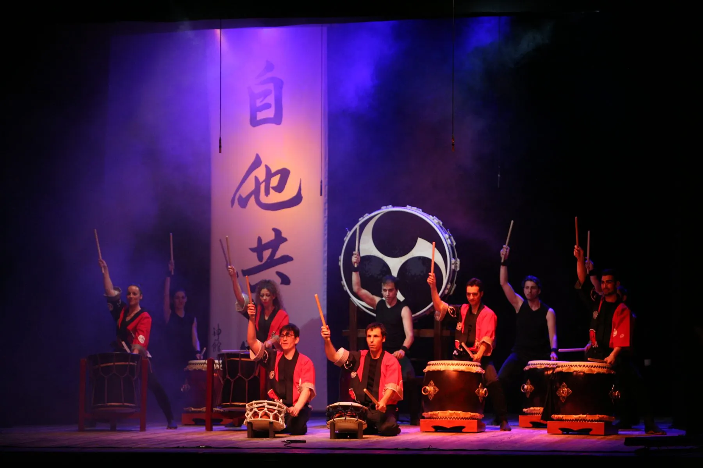
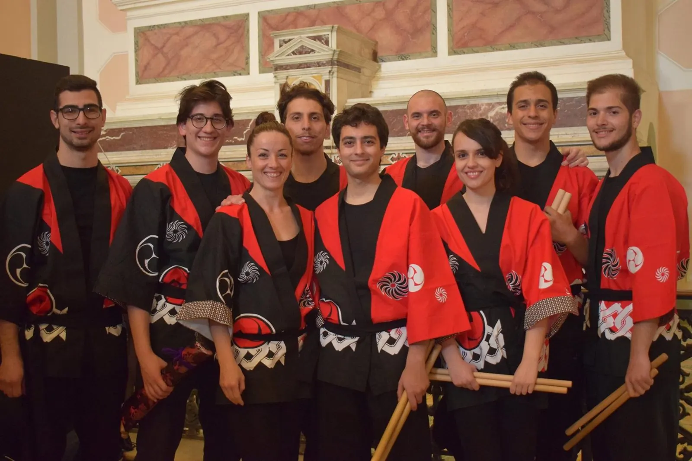
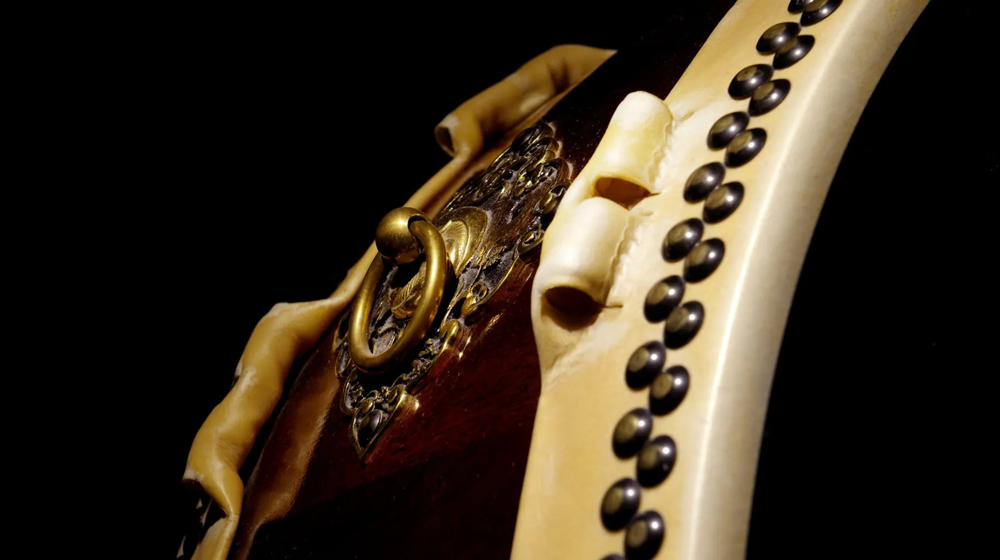

太鼓Sin dai tempi antichi
Come il battitodel cuore
Sin dai tempi antichi il Tamburo ha accompagnato la nascita e lo sviluppo di innumerevoli civiltà. Il suo suono ritmico e possente era il sottofondo della Vita della popolazione, come il battito del cuore lo è del singolo individuo.
In Giappone il Taiko si è sviluppato in simbiosi con la tradizione e la cultura tipica del Sol Levante.
Nell'ultimo secolo, grazie all'opera di alcuni gruppi di artisti, il Taiko si è trasformato in Arte Performativa e Visuale in grado di veicolare ed esprimere le potenzialità dell'Essere Umano.

Si dice che il suono del Taiko venisse utilizzato per:
- Delimitare i confini dei villaggi01
- Scandire il ritmo delle battaglie02
- Esprimere gioia ed euforia durante le feste tradizionali, i Matsuri03
- Accompagnare le preghiere dei fedeli04
- Proteggere la popolazione dagli spiriti maligni, garantendo sicurezza e prosperità05


Il gruppo
Kodama Shin Kyo
I Kodama Shin Kyo si dedicano con grande passione allo studio e alla pratica di quest'Arte.
Guidati nella formazione artistica dal Kyoshindo, primo gruppo di Taiko italiano, si impegnano a far conoscere questa pratica attraverso corsi e seminari presso il Kami No Kan Dojo.




Sul palco
Arte performativae visuale






Corsi e seminari
Suona con noi
Corsi e seminari di Taiko presso il Kami No Kan Dojo.